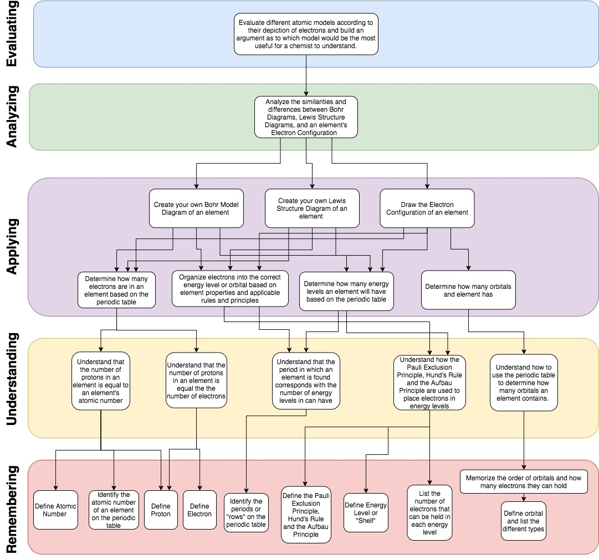

Front End Analysis Projects
The artifacts below represent a portion of a semester long course in the Front End Analysis of Systems. All work was completed individually.
Needs Assessment
Description:
This needs assessment overview is a basic outline of the needs assessment procedure used to analyze an issue that presented itself at a community college in Arkansas regarding the professional communication of students with internship supervisors.
Procedural Analysis
Description:
This artifact represents an analysis of the procedures used for Biology students to view a pre-prepared specimen under a microscope. A procedural analysis such as this might be used in curriculum development for outlining the type of content a learner should be able to perform.
- To view project click here.
Prerequisite Analysis
Description:
The prerequisite analysis below represents a breakdown of the knowledge, skills, and rules that would be required for an introductory Chemistry student to accomplish a higher level learning objective related to atomic structure. It depicts all lower level objectives that an instructional designer would need to include in a curriculum that seeks to help a student achieve this objective.
